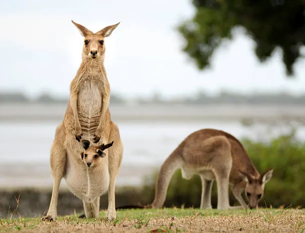
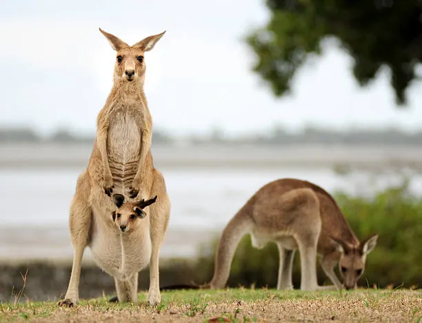
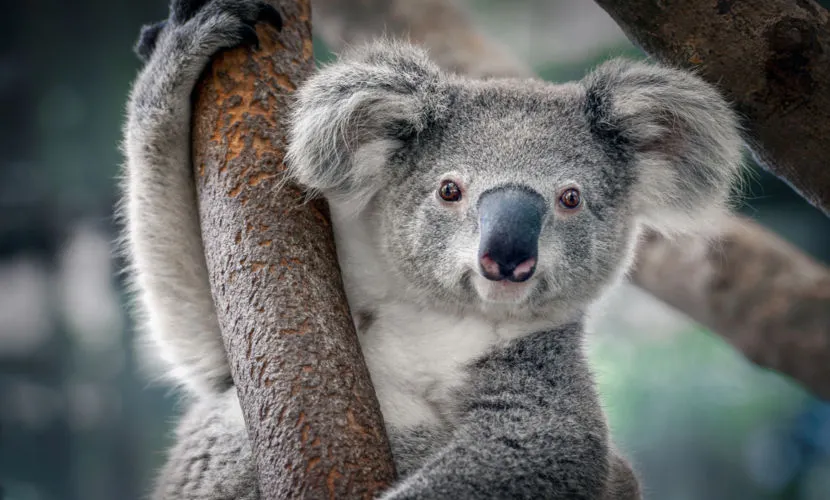
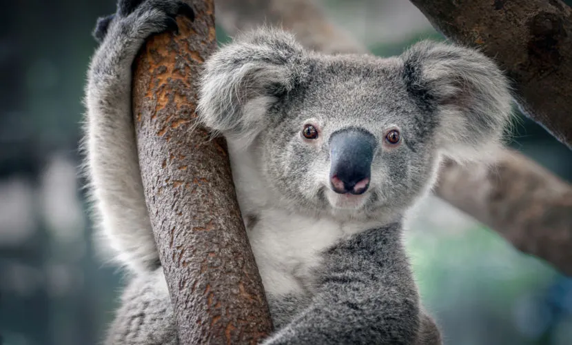
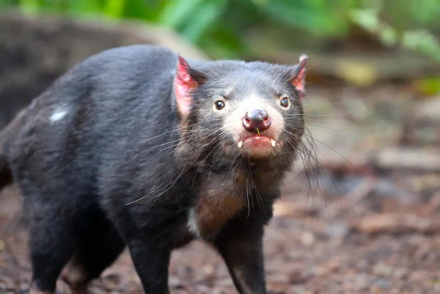
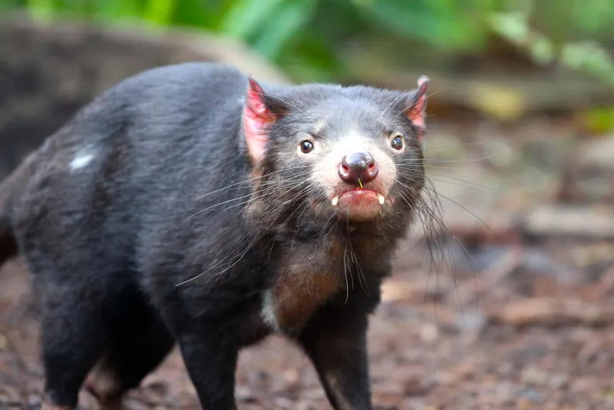

A biodiversidade única da Austrália
A fauna australiana é uma das mais diversas do mundo, com muitos animais encontrados apenas neste país.
Animais icônicos
Canguru - O símbolo da Austrália, conhecido por sua força e habilidade de saltar longas distâncias.


Coala - Mamífero que se alimenta exclusivamente de folhas de eucalipto e passa a maior parte do tempo dormindo.


Diabo-da-tasmânia - Pequeno marsupial carnívoro encontrado na Tasmânia residente País da Austrália.


Animais perigosos
A Austrália também é conhecida por seus animais perigosos, como:
| Animal | Perigo |
|---|---|
| Arraia azul | Veneno doloroso e letal em alguns casos. |
| Serpente Taipan | Uma das cobras mais venenosas do mundo. |
| Água-viva Cubo | Extremamente venenosa, pode ser fatal. |
Preservação da vida selvagem
O governo australiano possui diversas iniciativas para a proteção da fauna, incluindo parques nacionais e programas de conservação.